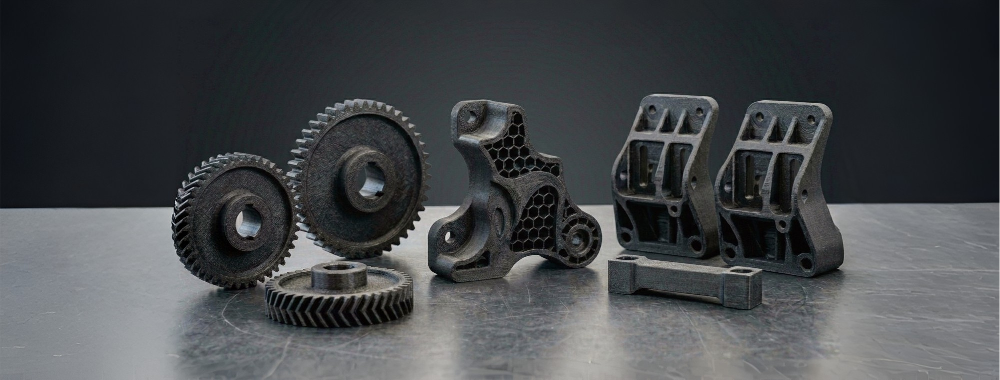

B2B & VÝROBA
Náhradní díly pro výrobní linky.
Když se rozbije díl a originál je nedostupný nebo má dlouhou dodací lhůtu, oskenujeme poškozenou součást přímo u vás, překreslíme ji do CAD modelu a vytiskneme funkční náhradu.

Co řešíme
- Poškozené nebo opotřebované plastové díly strojů
- Díly bez dostupné výkresové dokumentace
- Provizorní náhrady na dobu, než dorazí originál
- Drobné úpravy a vylepšení existujícího dílu
Proč 3D Kastl Studio
- Sken a tisk bez nutnosti mít CAD data předem
- Volba materiálu podle reálného namáhání dílu
- Rychlost řešení v řádu hodin až dnů
- Možnost dodatečné úpravy modelu po testu
POSTUP
Od poškozeného dílu k funkční náhradě
Prasklá součástka na stroji, chybějící výkresy nebo potřeba upravit stávající zařízení — to všechno v průmyslu znamená zbytečné komplikace a zdržení. Díky spojení přesného 3D skenování a průmyslového 3D tisku dokáži flexibilně reagovat na vaše potřeby, ať už jde o akutní havárii, nebo plánovanou modernizaci.
Jaké jsou možnosti?
- Přesné 3D skenování a CAD model: Pomocí průmyslového laserového skeneru nasnímám poškozený či opotřebovaný díl s přesností na setiny milimetru. V softwaru ho digitálně zrekonstruuji a vám dodám hotová 3D data nebo výkres. To je ideální, pokud díl potřebujete nechat vyfrézovat či vysoustružit z kovu u vašeho dodavatele.
- Výroba odolné plastové kopie: Pokud díl může být z plastu, rovnou ho i vytisknu. Zapomeňte na křehké materiály — používám vysoce odolné technické plasty jako PP-CF (s karbonovým vláknem), Nylon nebo houževnaté PCTG, které snesou tvrdé průmyslové nasazení.
Kdy to nejčastěji využijete?
- Rychlá záchrana výroby: Když potřebujete expresní náhradu (klidně jako provizorium), než dorazí drahý originál.
- Retrofit a modernizace: Potřebujete stávající stroj upravit, přidat k němu nový snímač, držák nebo kryt, ale nemáte od něj dokumentaci.
- Výroba přípravků: Návrh a tisk montážních šablon, zakládacích masek nebo ergonomických pomůcek pro operátory na míru.
- Optimalizace dílů: Pokud se nějaký plastový komponent na stroji kazí podezřele často, naskenujeme ho a v CADu navrhneme jeho zesílení.
Výsledek?
Získáváte kompletní digitální data pro libovolnou budoucí výrobu a k tomu možnost okamžitého nasazení odolného plastového kusu. Vše lokálně, na Chomutovsku a bez dlouhého čekání.
Potřebujete zrekonstruovat díl, získat 3D model nebo vyrobit přípravek? Ozvěte se — probereme nejvhodnější postup pro váš projekt.
3D skenování
U mně nebo u vás v dílně oskenuji díl s přesností na setiny milimetru.
CAD model
Z naskenovaných dat (nebo z vašeho výkresu) sestavím upravitelný 3D model, případně opravím vady.
Volba materiálu
Podle namáhání a prostředí zvolím PETG, PCTG, PA nebo jiný vhodný materiál.
Tisk a dodání
Dodám vám hotový 3D model (výkres) pro vaši kovovýrobu, nebo z něj rovnou vytisknu odolný plastový díl na Bambu Lab X2D, připravený k okamžité montáži.
Ceník — B2B & Výroba
| Služba | Cena | Poznámka |
|---|---|---|
| 3D skenování ve studiu | 830 Kč / hod | Příprava a očištění dílu, bezkontaktní digitalizace. |
| 3D skenování v terénu | 1 540 Kč / hod | Mobilní stanice, kalibrace na místě. |
| Služba | Cena | Poznámka |
|---|---|---|
| CAD modelování — reverzní inženýrství | 940 Kč / hod | Tvorba objemového modelu, výstup STEP / IGES. |
| Materiálová skupina | Cena | Poznámka |
|---|---|---|
| Běžné plasty (PETG) | 70 Kč / hod | Standardní průmyslové součástky. |
| Technické plasty (PCTG, PA) | 120 Kč / hod | Vysoké teploty tisku, sušení materiálu. |
| Kompozity (PCTG-CF, PA-CF) | 160 Kč / hod | Zvýšené opotřebení kalených trysek. |
| Materiál | Cena / gram | Nákupní cena / kg |
|---|---|---|
| PETG | 1,20 Kč / g | 479 Kč / kg (Spectrum) |
| PCTG | 1,63 Kč / g | 650 Kč / kg |
| PA (Nylon) | 2,25 Kč / g | 900 Kč / kg |
| PETG-CF | 2,81 Kč / g | 1 125 Kč / kg |
| PCTG-CF | 3,38 Kč / g | 1 350 Kč / kg |
| PA-CF | 4,00 Kč / g | 1 600 Kč / kg |
| Pásmo | Cena | Oblast |
|---|---|---|
| Lokální (do 15 km) | 416 Kč | Klášterec n. O., Kadaň. |
| Okresní (do 35 km) | 930 Kč | Chomutov, Jirkov, Ostrov. |
| Regionální (do 65 km) | 1 760 Kč | Karlovy Vary, Most, Žatec, Teplice. |
| Vzdálené výjezdy (>65 km) | 16 Kč / km | Celková trasa tam i zpět. |
Výsledná cena zakázky = strojový čas + materiál + práce (skenování / CAD) + případná doprava. Ceny jsou orientační — přesnou nabídku zašlu po konzultaci. Jak vzniká cena?
Stojí vám linka kvůli chybějícímu dílu?
Napište nám popis nebo fotku poškozené součásti — odpovídáme do 24 hodin.
Kontaktovat 3D Kastl Studio